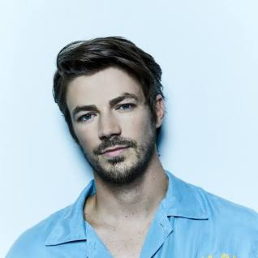
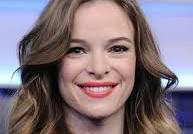
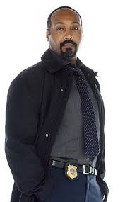
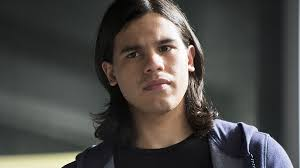
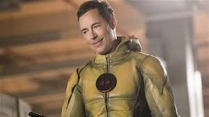

Sobre a série de TV
The Flash é uma série de televisão norte-americana de super-heróis desenvolvida por Greg Berlanti, Andrew Kreisberg e Geoff Johns, transmitida pela emissora The CW desde 7 de outubro de 2014, e estrelada por Grant Gustin. A série é baseada no personagem Barry Allen/Flash da DC Comics, um super-herói fantasiado que combate o crime com o seu poder de se mover em velocidades inacreditáveis. É uma série spin-off de Arrow e se passa no mesmo universo fictício conhecido como Universo Arrow. A série teve seu último episódio exibido em 24 de maio de 2023, totalizando 185 episódios. A série marca o fim do Universo Arrow.
Inicialmente concebida como piloto de backdoor, a recepção positiva que Gustin recebeu durante duas aparições como Barry em Arrow levou os executivos a optar por desenvolver um piloto completo, com um orçamento maior e para ajudar a aprofundar o mundo de Barry com mais detalhes. A série é filmada principalmente em Vancouver, Colúmbia Britânica, Canadá.
A série foi oficializada no primeiro semestre de 2014,[1] com ordem de 23 episódios para a primeira temporada, que estreou em 7 de outubro de 2014.[2] A segunda temporada foi lançada em 6 de outubro de 2015 e a terceira temporada foi lançada no dia 4 de outubro de 2016.
A série estreou nos Estados Unidos em 7 de outubro de 2014, onde o episódio piloto se tornou a segunda maior audiência da emissora The CW, sendo superado apenas por The Vampire Diaries, em 2009. Em 11 de janeiro de 2015, a emissora The CW renovou a série para uma segunda temporada, que estreou em 6 de outubro de 2015.
Sinopse
Após testemunhar o estranho assassinato de sua mãe e a injusta acusação de seu pai pelo crime, Barry Allen fica sob os cuidados do detetive Joe West e sua filha Iris West. Barry se torna brilhante, mas socialmente, um cientista forense desconhecido trabalhando para o Departamento de Polícia de Central City. Sua obsessão por seu trágico passado faz com que ele fique separado das demais pessoas ao seu redor; ele investiga casos frios, ocorrências paranormais, e vazamentos de ponta de avanços científicos que podem dar uma luz no caso do assassinato de sua mãe. Ninguém acredita em sua descrição do crime — que uma bola de raio com o rosto de um homem invadiu sua casa naquela noite e matou sua mãe — e Barry é forçado a procurar por si mesmo pistas que limpem o nome de seu pai. Quatorze anos depois da morte de sua mãe, uma explosão de um avançado Acelerador de Partículas, durante sua apresentação ao público, banha a cidade com uma forma de radiação chamada matéria escura, durante uma tempestade. Barry é atingido por um raio da tempestade e banhado nos produtos químicos de seu laboratório. Acordando depois de um coma de nove meses, ele descobre que tem a habilidade de se mover mais rápido do que qualquer ser humano. Harrison Wells, criador e responsável pela falha do Acelerador de Partículas, descreve a natureza especial de Barry como um "meta-humano"; Barry, mais tarde, descobre que ele não é o único que mudou com a radiação. Ele promete usar seus poderes para proteger Central City dos riscos criminais dos meta-humanos. E então, associado por alguns amigos próximos que guardam seu segredo, Barry adquire uma nova personalidade conhecida como Flash.
1ª temporada (2014–2015)
Barry Allen, um cientista forense do Departamento de Polícia de Central City, tem um especial apreço por casos inexplicáveis, pois, no passado, sua mãe foi assassinada sob tais circunstâncias — na qual nem ele mesmo consegue explicar —, o que resultou na injusta prisão de seu pai pelo crime. Enquanto Barry lida com os problemas do dia-a-dia, uma explosão de um Acelerador de Partículas banha a cidade com uma forma de radiação previamente desconhecida durante uma tempestade. No processo, Barry é atingido por um raio da tempestade. Nove meses depois, quando acorda de um coma, ele descobre que tem a habilidade de se mover mais rápido do que qualquer ser humano. Barry, mais tarde, percebe que ele não é o único que mudou com a radiação. Ele promete usar seus poderes para proteger Central City dos riscos criminais dos outros que foram atingidos pela radiação (meta-humanos). E então, guiado por alguns amigos próximos que guardam seu segredo, Barry adquire uma nova personalidade conhecida como "Flash". No processo, ele acumula uma série de inimigos, como o Flash Reverso, que é o verdadeiro assassino de sua mãe. Que aparenta ser o Harrinson Wells.
Trailer 1ª Temporada
2ª temporada (2015–2016)
Meses depois dos acontecimentos de um evento que quase destruiu o mundo, o Flash é reconhecido como o herói de Central City. No entanto, o evento traz um mal de um universo paralelo na forma de um velocista chamado Zoom, que deseja matar todas as pessoas ligadas à super velocidade ao longo do multiverso. No entanto, Harrison Wells da terra-2 do multiverso e sua filha, Jesse, trabalham para ajudar Barry e seus amigos a parar Zoom. Joe e Iris lutam com o seu passado doloroso relacionado a sua família, especialmente após a chegada do irmão de Iris, Wally West, a quem Francine West deu à luz logo após abandonar sua família. Após um evento que atinge Barry de uma forma estrondosa, ele desiste de tudo e viaja de volta no tempo para salvar a vida de sua mãe das mãos do Flash-Reverso.
Trailer 2ª Temporada
3ª temporada (2016–2017)
Ao mudar seu passado, Barry altera a linha do tempo, resultando na criação do "Ponto de Ignição". Embora ele consiga restaurar a linha do tempo, isso cria novas ameaças, que incluem Savitar. Depois que Harry e Jesse voltam para a Terra-2, outro cópia de Harrison Wells da terra-19 é recrutado: o escritor "H.R.". Wally e Caitlin começam a manifestar habilidades meta-humanas; Wally se torna o velocista Kid Flash, enquanto Caitlin é forçada a suprimir seus poderes de gelo para evitar se tornar a Nevasca. Quando Barry viaja acidentalmente para o futuro e vê Iris ser morta por Savitar, ele fica desesperado para mudar o futuro e evitar que isso aconteça.
Trailer 3ª Temporada
4ª temporada (2017–2018)
Iris esteve auxiliando o Time Flash em Central City durante seis meses, mas se recusando a sofrer por Barry. Um Samurai voador com superpoderes aparece em Central City, ameaçando a cidade se o verdadeiro Flash não o enfrentar. Cisco revela que elaborou uma maneira de trazer Barry de volta sem desestabilizar a Força de Aceleração e rastreia Caitlin para conseguir sua ajuda. Contra a aprovação de Iris, o Time Flash retorna Barry com sucesso, que aparece dizendo coisas aleatórias e escrevendo símbolos nas paredes continuamente. Wally tenta parar o Samurai, mas é derrotado. Cisco decifra as escrituras de Barry e encontra uma frase aparentemente sem sentido. Na tentativa de recuperar as memórias de Barry, Iris se entrega ao Samurai. O plano funciona e Barry adquire sua velocidade, resgata Iris e derrota o Samurai, que é revelado ser um robô. Caitlin se junta novamente ao Time Flash, mas é revelado que ela está trabalhando para uma criminosa chamada Amunet em um bar, revelando também que ela continua tendo que lutar contra a personalidade de Nevasca aparecendo. É revelado que o "Samuroid" estava sendo controlado pelo Pensador, cujo plano era atrair o Flash para seus próximos planos.
Trailer 4ª Temporada
5ª temporada (2018–2019)
O Time Flash encontra a filha de Barry e Iris do futuro, Nora. Enquanto Iris expressa excitação, Barry está preocupado que ela poderia alterar a linha do tempo com base em seus próprios erros com a viagem no tempo. A equipe encontra um novo metahumano, Gridlock, que é capaz de absorver energia cinética, e Barry se veste em um traje anterior desde que seu último foi destruído. Quando Barry tenta mandar Nora para casa, Wally revela que o sangue de Nora está saturado com taquions negativos, o que a impede de usar a Força da Velocidade ou o Waverider das Lendas para viajar no tempo. Barry pergunta a Nora o que acontece com ele no futuro, com Nora revelando que ele nunca volta depois de desaparecer em 2024 e que ela viajou de volta no tempo para encontrá-lo. O engarrafamento faz com que um avião caia, então Barry, Nora, Wally e Cisco se unem para pará-lo, com Nora fornecendo a Barry um traje de anel do Flash. Eles conseguem impedir a queda do avião e o pousam com segurança em um rio. Enquanto Gridlock está sendo transportado para a prisão, o veículo é atacado por um indivíduo mascarado, que diz a Gridlock que ele planeja acabar com todos os metahumanos antes de se aproximar dele com um punhal em forma de raio.
Trailer 5ª Temporada
6ª temporada (2019-2020)
Barry Allen e o Time Flash começam a se preparar para chegada iminente da Crise nas Infinitas Terras, que foi antecipada de 2024 para 2019, eles também precisam lidar com a previsão do Monitor, que avisa que Barry terá que se sacrificar na Crise para salvar o universo. O Time Flash tem dificuldades de aceitar que o Flash terá que morrer e Barry passa a refletir e conversar com seus companheiros sobre seu possível sacrifício. No meio do processo, Barry precisa encarar a chegada do novo vilão Hemoglobina (Dr. Ramsey Rosso), um metahumano que necessita matar os outros para curar seu câncer e poder sobreviver.
Trailer 6ª Temporada
7ª temporada (2021)
A Equipe Flash derrota Eva e cria uma nova Força de Velocidade, enquanto Iris, Kamilla e Singh escapam da Dimensão do Espelho. Como efeito colateral dos ataques de Eva, Caitlin e Frost são separados em corpos diferentes. Mais tarde, a Equipe Flash luta com o nascimento da Força de Força, da Força Sábio e da Força Estática. Depois, a Equipe Flash se envolve na Guerra Godspeed, na qual Barry se reúne com sua futura filha Nora e conhece seu futuro filho Bart Allen. Barry brevemente se alia com um Thawne reconstituído para derrotar Godspeed, e depois, Thawne foge prometendo se tornar mais rápido que Barry.
Trailer 7ª Temporada
8ª temporada(2021-2022)
A nova temporada abre com o evento de cinco partes "Armageddon". Thawne faz com que Barry seja alvo de Despero, que afirma que Barry destruirá a Terra em 2031. Mais tarde, Barry entra na linha do tempo de Thawne, onde ele era Flash e Barry era Flash Reverso. Com a ajuda de Damien Darhk, Barry restaura a linha do tempo original, impede a morte de Joe e poupa Thawne de seu apagamento, removendo sua velocidade. Mais tarde, a Equipe Flash luta contra Deathstorm, cuja derrota vem ao custo da vida de Frost, devastando seu namorado Chillblaine. Barry também encontra Meena Dhawan, que ganhou super-velocidade com a ajuda de um remanescente de tempo revivido de Thawne. Eles lutam com os recém-nascidos homólogos negativos da Força, Sábio e Força Estática, que usam Iris para reviver Thawne em seu corpo remanescente do tempo, mas são derrotados, com Thawne sendo removido da linha do tempo
Trailer 8ª Temporada
9ª temporada(2023)
A nona e última temporada começa com a Equipe Flash unindo forças com antigos inimigos para derrotar a Morte Vermelha, que mais tarde é revelado ser Ryan Wilder de uma Terra alternativa. Mais tarde, Rosso retorna para infectar o multiverso recém-recriado, mas Barry o impede com a ajuda de Oliver Queen, John Diggle e Wally West. Depois disso, Eddie, que havia sido misteriosamente ressuscitado com falsas memórias, é escolhido como o novo avatar da Força de Velocidade Negativa, tornando-se o velocista Cobalt Blue. Trazendo Eobard, Zoom, Savitar e Godspeed de volta com ele, Eddie luta contra a Equipe Flash, mas finalmente desiste e forma uma trégua com Barry. A série termina com o nascimento de Nora, e Barry escolhendo Avery Ho, Max Mercury e Jess Chambers para se tornarem novos speedsters.
Trailer 9ª Temporada
Produção
Desenvolvimento
Em julho de 2013, foi anunciado que os co-criadores de Arrow, Greg Berlanti e Andrew Kreisberg, além dos diretores David Nutter e Geoff Johns, iriam desenvolver uma série de televisão do herói Flash para a The CW. A série mostraria a história da origem de Barry Allen. Após o anúncio, Greg Berlanti revelou que Barry Allen iria aparecer pela primeira vez como um personagem recorrente em Arrow em três episódios da segunda temporada, todos escritos por Greg Berlanti, Andrew Kreisberg e Geoff Johns, e que o último dos episódios seria como um piloto para a série. Assim, Andrew Kreisberg acrescentou que Barry Allen será um cientista forense e dará introdução de seus superpoderes, assim como a sinopse, de uma maneira muito humana e comediante.
Barry finalmente apareceu duas vezes na segunda temporada de Arrow, com o piloto backdoor planejado canceladoFoi decidido que era melhor dar corpo à história do Flash e seu mundo com um orçamento maior, ao invés de incorporar o set de filmagens com personagens num piloto em Arrow. A decisão foi tomada depois que executivos da The CW viram o material em dois episódios pilotos de The Flash que foram bem recebidos. O episódio piloto foi escrito por Greg Berlanti, Andrew Kreisberg e Geoff Johns, e dirigido por David Nutter. A apresentação foi debatida no set de filmagens de Arrow, que foi onde Barry Allen fez sua primeira aparição. O piloto foi encomendado oficialmente em 29 de janeiro de 2014 e foi escrito por Berlanti, Kreisberg e Johns, e dirigido por Nutter. Em 8 de maio de 2014, The Flash foi oficialmente escolhida como uma série, com uma ordem inicial de 13 episódios. Mais três scripts foram encomendados em setembro de 2014, após uma resposta positiva aos episódios recém-concluídos pelos executivos, mais dez episódios foram encomendado no mês seguinte para uma temporada completa de 23 episódios.
Com o início da produção na segunda temporada da série, a ex-escritora de Arrow, Gabrielle Stanton, foi promovida a produtora executiva e showrunner; depois de ter atuado como produtora e escritora consultora no final da primeira temporada. No entanto, mais tarde foi relatado que Kreisberg retornaria às funções de showrunner exclusivo em um momento não especificado. Mais tarde, esse tempo foi comprovado no início de 2016, quando Stanton não foi mais creditada como envolvida no programa. Em maio de 2017, foi relatado que Aaron Helbing estaria saindo da série. Helbing serviu como escritor desde a primeira temporada e como co-showrunner, junto com seu irmão Todd e Kreisberg, desde a segunda.
Elenco e personagens
Grant Gustin como Barry Allen / Flash: Um investigador forense da polícia de Central City. Momentos após a explosão do acelerador de partículas dos laboratórios S.T.A.R., Barry é atingido por um raio em seu laboratório junto com diferentes produtos químicos, afetando-o o mesmo. Quando ele acorda do coma depois de nove meses, ele tem uma velocidade sobre-humana. Em Setembro de 2013, Grant Gustin foi escalado para o papel principal. Gustin começou a pesquisar o personagem durante o processo de audição e a ler o maior número possível de quadrinhos.
Candice Patton como Iris West-Allen: A filha de Joe West, irmã de Wally West, e a esposa de Barry Allen, ficando noiva no episódio "Dueto" e se casando durante o crossover Crise na Terra-X. Ela trabalha como jornalista no Cidadão de Central City, jornal criado pela mesma.
Danielle Panabaker como Dra. Caitlin Snow / Nevasca: Uma especialista em bioengenharia altamente inteligente, Caitlin acreditava que seu noivo, Ronnie Raymond, tinha sido morto durante a explosão do acelerador de partículas dos laboratórios S.T.A.R., até que ele retornou a meio da primeira temporada. Ronnie e Caitlin se casam no final da primeira temporada. Ela também é uma metahumana com habilidades criocinéticas.
Rick Cosnett como Eddie Thawne/Malcolm Gilmore/Azul Cobalto (temporada 1: principal; temporada 2–3 e 8: participação; temporada 9: recorrente): Transferido recentemente para o Departamento de Polícia da Cidade Central, o passado de Eddie era um mistério e ele guardava um segredo sombrio. Ele era parceiro do detetive Joe West e interesse amoroso Iris West. Cosnett deixou a série após a primeira temporada, depois do sacrifício de seu personagem para tirar Eobard Thawne, seu descendente distante, da história.
Carlos Valdes como Cisco Ramon / Vibro: Um gênio da engenharia mecânica, a Cisco é o membro mais jovem da equipe de cientistas dos laboratórios S.T.A.R. e é um ex-metahumano que tinha o poder de "vibrar" a localização de uma pessoa e a capacidade de viajar por todo o multiverso.
Tom Cavanagh como Harrison Wells: A mente e o dinheiro por trás do acelerador de partículas dos laboratórios S.T.A.R., Wells se torna paraplégico após a explosão de seu acelerador de partículas, criando um grande número de meta-humanos em Central City. Wells treina Barry, ajudando-o a dominar seu poder e aumentar sua velocidade. Ele se revela como um descendente de Eddie Thrawne, chamado Eobard Thawne - o Flash Reverso. Eobard, o arqui-inimigo do Flash no futuro, assassinou o Dr. Harrison Wells original e assumiu sua identidade. Nas temporadas seguintes, Cavanagh também interpreta vários doppelgängers de Wells de realidades alternativas. Esses personagens incluem o sarcástico, mas brilhante "Harry", que, junto com sua filha Jesse, é da Terra-2; O homólogo da Terra-19 de Wells, o romancista de ficção científica "H.R.", o detetive "Sherloque" da Terra-221 e o aventureiro Nash Wells.
Jesse L. Martin como Joe West: Um detetive da polícia que atua como pai substituto de Barry, levando-o para sua casa depois que a mãe de Barry é assassinada e seu pai é injustamente preso pelo crime. Joe é o pai de Iris e Wally. Atualmente também tem uma filha com sua noiva, a advogada Cecille Horton, chamada Jenna West. Martin tirou uma licença médica da série durante a quinta temporada depois de sofrer uma lesão nas costas.
Keiynan Lonsdale como Wally West / Kid Flash (temporada 2–4: principal; temporada 5–9: participação): Filho de Joe e irmão de Iris, nascido sem o conhecimento deles depois que sua mãe deixou Central City. Os produtores não gostaram da introdução de parentes de personagens que nunca foram mencionados anteriormente, achando que era "estranho" e optaram por apresentar Wally como desconhecido até mesmo para seus parentes. Eles também escolheram fazer dele o irmão de Iris, diferente dos dos quadrinhos, onde ele era sobrinho dela. Explicando a escalação de Lonsdale, Kreisberg disse: “Assim como quando conhecemos Grant [Gustin] pela primeira vez, soubemos instantaneamente que Keiynan incorporaria todo o coração e a coragem de um herói.” Depois do flashpoint, Wally finalmente obtém poderes de velocidade do Doctor Alquimia e se tornando o Kid Flash. Na quarta temporada, ele deixa Central City para sair da sombra de Barry, e durante esse tempo ele se junta as Lendas. Ele volta para casa após o nascimento da meia-irmã Jenna West.
Neil Sandilands como Clifford DeVoe / Pensador (temporada 4): Um professor universitário e metahumano com um intelecto de nível genial, que procura consertar tudo o que considera errado com a humanidade.
Hartley Sawyer como Ralph Dibny / Homem Elástico (temporada 5–6: principal; temporada 4: recorrente): Um investigador particular, anteriormente um policial corrupto da CCPD, Dibny é um metahumano com superpoderes, incluindo elasticidade corporal e maleabilidade. Ele se torna um membro do Time Flash.
Danielle Nicolet como Cecile Horton (temporada 5–presente: principal; temporada 1: participação; temporada 3–4: recorrente): Advogada do distrito que se torna namorada de Joe West e mãe de sua filha Jenna West. Durante a gravidez, ela ganha superpoderes telepáticos temporários. Após a gravidez, ela desenvolve novas habilidades metahumanas de sentir a empatia de outras pessoas.
Jessica Parker Kennedy como Nora West-Allen / XS (temporada 5: principal; temporada 4: participação): Filha speedster de Barry e Iris no futuro.
Chris Klein como Orlin Dwyer / Cicada (temporada 5): Um serial killer meta-humano que está determinado a acabar com todos os meta-humanos.
aMonica Garrett como Mar Novu / Monitor (temporada 6: principal; temporada 5: participação): Um Multiversal testando diferentes Terras no multiverso, em preparação para uma "crise" iminente.
Efrat Dor como Eva McCulloch (temporada 6–presente): Engenheira quântica e co-fundadora da McCulloch Technologies.
Elenco principal





Filmagens
Em novembro de 2013, foi anunciado que a terceira aparição do Flash no set de filmagens não seria mais um piloto em Arrow, com o estúdio optando por fazer um piloto tradicional no lugar.
A produção do piloto começou em março de 2014, com as filmagens ocorrendo em Vancouver, Colúmbia Britânica, Canadá; filmagens adicionais para a série acontecem em Portland, Oregon. Sobre como as sequências de ação são filmadas para a série, em comparação com Arrow, Gustin disse: "Quando [Arrow] filma as sequências de ação, praticamente o que você vê é o que obtém e eles estão realmente fazendo tudo. Nós fazemos muito, de tiros de placa que são vazios da área em que vamos estar e depois nos colocam mais tarde no post. Eu faço muitas lutas. Eu não tenho que fazê-lo a toda velocidade e então eles aumentam a velocidade e muita gente tem que congelar e eu continuo em movimento. Então eu tenho que limpar o quadro e voltar ao quadro. É realmente coisas tediosas que temos que fazer. No deles, eles aprendem coreografia de luta e disparam de os ângulos perfeitos e o que você vê é o que obtém." A produção na terceira temporada começou no início de julho de 2016. Em 13 de março de 2020, a produção na sexta temporada foi encerrada devido à pandemia de COVID-19.
Música
O compositor de Arrow, Blake Neely, também compõe para a série. Em dezembro de 2014, as gravadoras WaterTower Music e Lava Records lançaram a seleção de músicas dos episódios crossover entre The Flash e Arrow, assim como duas faixas especiais para respectivos episódios, em 2014. A primeira temporada, trilha sonora de dois discos, foi lançada em 16 de outubro de 2015. A trilha sonora da segunda temporada foi lançada digitalmente em 22 de julho de 2016 e em formato de CD em 26 de julho de 2016.